|
Component family |
ESB/REST | ||||
|
Function |
tRESTRequest is a server-side component which accepts the HTTP and/or HTTPS requests from the clients and support GET, POST, PUT and DELETE HTTP methods.
| ||||
|
Purpose |
This component allows you to receive GET/POST/PUT/DELETE requests from the clients on the server end. | ||||
|
Basic settings |
REST Endpoint |
Fill this field with the URI location where REST-ful web service will be accessible for requests.
| |||
|
|
REST API Mapping |
Click the [+] button beneath the mapping table to add lines to specify HTTP request: Output Flow: Click the [...] button to specify the name of an output flow and set the schema for that output flow in the dialog box afterwards. The schema is not mandatory, so if you do not need to pass additional parameters to the tRESTRequest component, you can leave the schema empty. However, you will have to populate the schema if you have URI Path parameters set in the URI Pattern field or if you need to add optional request parameters such as URI Query, HTTP Header or Form parameters, to the URI specified in the REST Endpoint field. If you specify URI parameters in the output flow schema, you might need to define what type of parameter it is in the Comment field of the schema. By default, if you leave the Comment field empty, the parameter is considered as a Path parameter. Below is a list of supported Comment values:
HTTP Verb: Select a HTTP method (GET/POST/PUT/DELETE) from the list. URI pattern: Fill this field with REST-ful URIs that describe the resource. | |||
|
|
Use HTTP Basic Authentication |
Select this check box to enable the HTTP Basic authentication method for the current service. | |||
|
Advanced settings |
tStatCatcher Statistics |
Select this check box to gather the Job processing metadata at a Job level as well as at each component level. | |||
|
Usage |
This component covers the possibility that a Talend Job can be wrapped as a service, with the ability to input a request to a service into a Job and return the Job result as a service response. The tRESTRequest component should be used with the tRESTResponse component to provide a Job result as a response, in case of a request-response communication style. | ||||
|
Limitation |
n/a | ||||
This scenario describes the process of accepting an HTTP request from the client, processing it and sending the response back.

Drop the following components from the Palette onto the design workspace: tRESTRequest, tXMLMap and tRESTResponse.
Double-click tRESTRequest in the design workspace to display its Basic settings view.

Fill the REST Endpoint field with the URI location where the REST-ful web service will be accessible for requests. For example, "http://192.168.0.235:8088/user".
![[Note]](../images/note.png)
If you want your service to be available on both HTTP and HTTPS, fill the field with a relative path. For example, if you type in "/test", your service will be available on both http://<DefaultHTTPEnpointAddress>/test and https://<DefaultHTTPSEnpointAddress>/test, provided that you have configured your Runtime container to support HTTPS. For more information, see the Talend ESB Container Administration Guide.
Click the [+] button to add one line in the REST API Mapping table.
Select the newly-added line and click the [...] button in the Output Flow column to add a schema for the output flow.
In this scenario, the output flow will be named as GetOneUser.

Then click the [+] button to add a new line id to the schema in the dialog box.
Click OK to save the schema.
Select GET from the list in the HTTP Verb column.
Fill the field in the URI Pattern column with
"/{id}/".
Connect tRESTRequest to tXMLMap using the Row > GetOneUser connection.
Double-click tXMLMap in the design workspace to open the Map Editor.
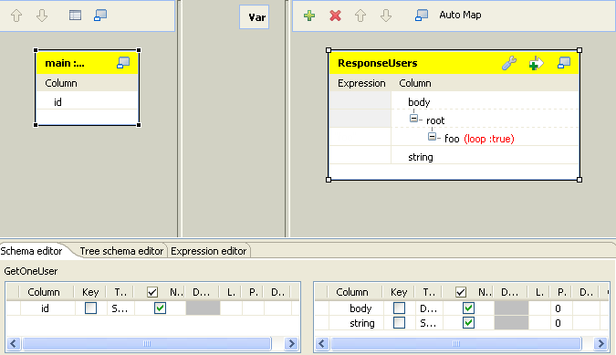Click the [+] button on the top right to add an output and name it as ResponseUsers.
Click the [+] button on the bottom right to add two columns for the output.
Name the first column as body and set the Type to Document.
Name the second column as string and set the Type to String.
Right-click on the node root and select Create Sub-Element to create a sub-element.
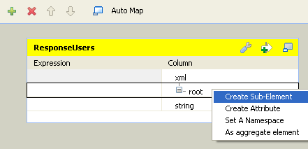Name the sub-element as foo in the popup dialog box.
Right-click on the foo node created in the previous step and select As loop element.
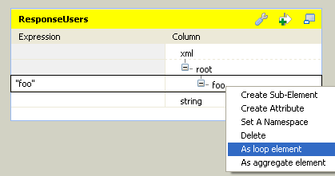Select the id column of the GetOneUser table to the left and drop it onto the Expression field of the foo node of the ResponseUsers table to the right.

Click OK to save the settings.
Connect tXMLMap to tRESTResponse using Row > ResponseUsers connection.
Click Sync columns to retrieve the schema defined in the preceding component.

Select OK(200) from the Return status code list.
Leave the rest of the settings as they are.
This scenario describes how to use URI query parameters in tRESTRequest to explore data of a database, and send the response via the tRESTResponse.
To do so, you can create two subjobs linked together by an OnSubjobOk connection; this way the two subjobs will be executed sequencially. For more information on Trigger connection, see the Talend Open Studio User Guide. The first subjob will create and populate the database and the second one will allow to explore the database through the REST service.

To do this, proceed as follows:
Drop the following components from the Palette onto the design workspace: tFixedFlowInput from the Misc family and tMysqlOutput from the Databases > Mysql family.
Link tFixedFlowInput to tMysqlOutput using a Row > Main connection.
Double-click tFixedFlowInput to display its Basic settings view:
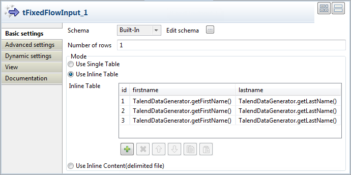Click the [...] button next to Edit schema to open the schema editor.
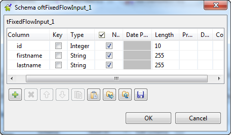In the schema editor, click the [+] button three times to add three lines and set them as displayed in the above screenshot.
Click Ok.
Back to tFixedFlowInput Basic settings view, in the Mode area, select the Use inline table option.
Under the inline table, click the [+] button three times to add three rows in the table.
In the inline table, click the id field of the first row and type in 1.
Click the firstname field of the first row, press Ctrl+Space to display the autocompletion list and select the TalendDataGenerator.getFirstName() variable in the list.
Click the lastname field of the first row, press Ctrl+Space to display the autocompletion list and select the TalendDataGenerator.getLastName() variable in the list.
Do the same for the two following rows to obtain the settings displayed in the screenshot.
Double-click tMysqlOutput to display its Basic settings view:
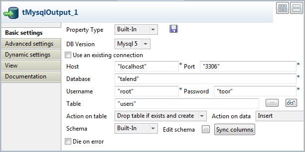From the Property Type list, leave Built-in and fill in the Host, Port, Database, Username and Password fields manually. If you centralized your connection information to the database in the Metadata > DB Connections node of the Repository, you can select Repository from the list and the fields will be automatically filled in.
For more information about storing metadata, see Talend Open Studio User guide.
In the Table field, type in the name of the table in which the data will be loaded, for example: users.
From the Action on table list, select Drop table if exists and create, select Insert from the Action on data list.
Click Sync columns to retrieve the schema coming from the previous component.
To do this, proceed as follows:
Drop and place the following components as displayed in the first screenshot:
tRESTRequest and tRESTResponse from the ESB > REST family,
tFlowToIterate from the Orchestration family,
tMysqlInput from the Databases > Mysql family,
tXMLMap from the Processing family.
To do this, proceed as follows:
Double-click tRESTRequest in the design workspace to display its Basic settings view:
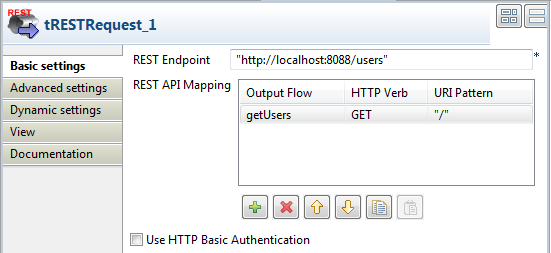Fill the REST Endpoint field with the URI location where the REST-ful web service will be accessible for requests. For example, "http://localhost:8088/users".
Click the [+] button to add one line in the REST API Mapping table.
Select the newly-added line and click the [...] button in the Output Flow column to add a schema for the output flow.
In the dialog box, name the output flow getUsers. A schema editor dialog box appears.
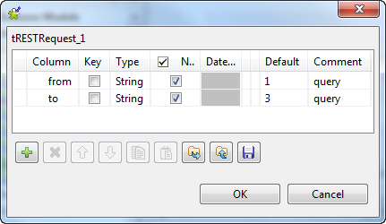In the schema editor, click the [+] button twice to add two lines and set them as displayed in the above screenshot.
Click OK.
Back to tRESTRequest Basic settings view, select GET from the list in the HTTP Verb column.
Leave the URI Pattern column as is.
Now that you created the tRESTRequest output flow, you can use the corresponding link to connect to the following component:
Connect tRESTRequest to tFlowToIterate using Row > getUsers connection.
Leave the tFlowToIterate settings as is.
Connect tFlowToIterate to tMysqlInput using Row > Iterate connection.
To do this, proceed as follows:
Double-click tMysqlInput to display its Basic settings view:

From the Property Type list, leave Built-in and fill in the Host, Port, Database, Username and Password fields manually. If you centralized your connection information to the database in the Metadata > DB Connections node of the Repository, you can select Repository from the list and the fields will be automatically filled in.
For more information about storing metadata, see Talend Open Studio User guide.
Leave the Schema list as Built-in and click the [...] button next to the Edit schema field.
In the schema editor, define the schema exactly like the one of the tFixedFlowInput.
In the Table Name field, fill in the name of the table in which the data are stored: users.
Leave the Query Type list as Built-in and fill in the Query field with the following SQL query allowing to explore the database data with the URI query set in the tRESTRequest component:
"select * from users where id >= " + globalMap.get("getUsers.from") + " and id <= " + globalMap.get("getUsers.to")
Right-click tMysqlInput, hold and drag to tXMLMap to connect the two components together.
Double-click tXMLMap in the design workspace to open the Map Editor.
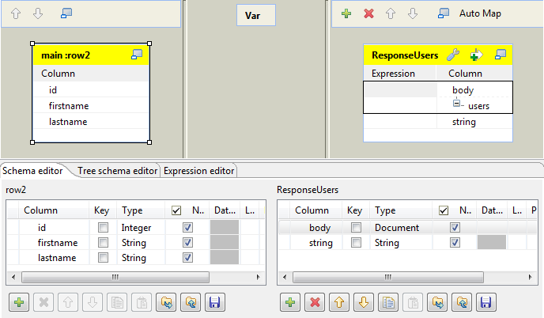Click the [+] button on the top right to add an output and name it as ResponseUsers.
Click the [+] button on the bottom right to add two columns for the output.
Name the first column as body and set the Type to Document.
Name the second column as string and set the Type to String.
Right-click on the root node, select Rename in the list and rename it users
Right-click on the root node and select Create Sub-Element to create a sub-element.

Name the sub-element user in the popup dialog box.
Right-click on the user node created in the previous step and select As loop element.
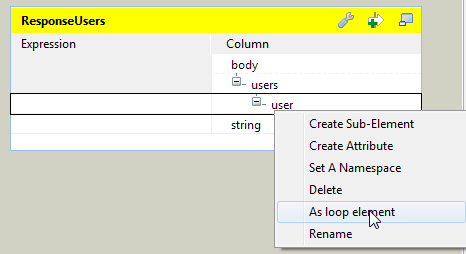Select the id column of the row2 table to the left and drop it onto the user node of the ResponseUsers table to the right.
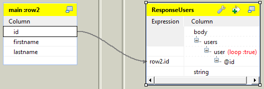In the [Selection] dialog box, select the Create as attribute of target node option and click OK.
Select the firstname and lastname columns of the row2 table to the left and drop it onto the user node of the ResponseUsers table to the right.
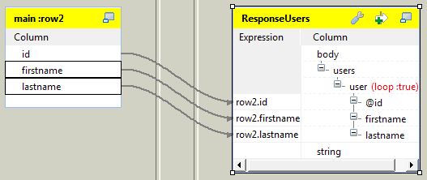In the [Selection] dialog box, select the Create as sub-element of target node option and click OK.
Click the wrench icon on the top of the ResponseUsers table to open the setting panel.
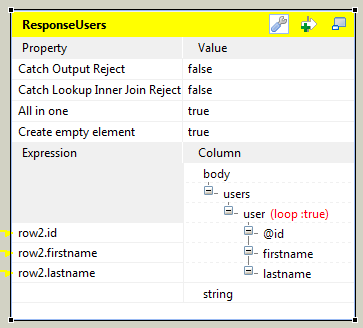Set the All in one feature as true, this way all XML data is outputted in one single flow.
Click OK to save the settings.
Connect tXMLMap to tRESTResponse using Row > ResponseUsers connection.
Double-click tRESTResponse in the design workspace to display its Basic settings view.

Click Sync columns to retrieve the schema defined in the preceding component.
Leave the other settings as they are.
Now that the two subjobs are created, you can connect them together:
Right-click the tFixedFlowInput component of the first subjob.
Select Trigger > OnSubjobOk on the list.
Click the tRESTRequest component of the second subjob.
This way, when executing the job, the second subjob will be executed only if the first one's execution succeeded.
Save the Job and press F6 to execute it.

Go to your browser if you want to test the service.
For example, use the URI query
?to=2to retrieve the data of the two first users.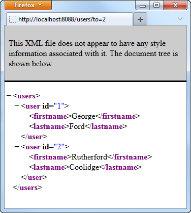The HTTP request for a user id is accepted by the REST service and the HTTP response is sent back to the server.